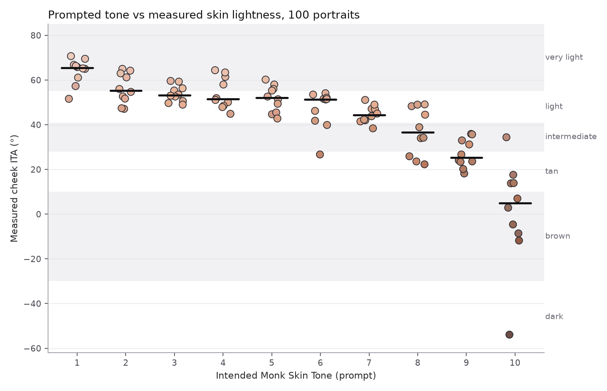
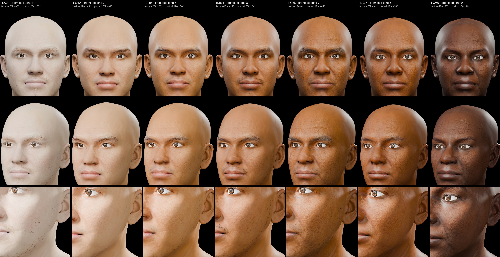
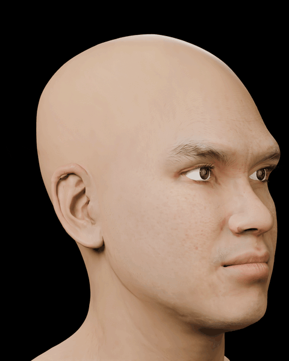
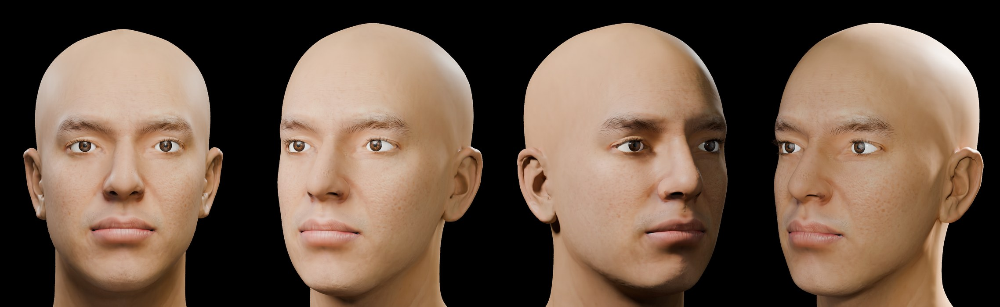
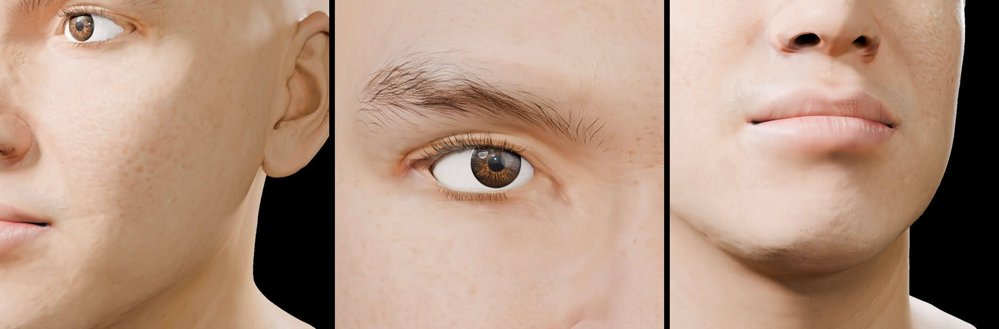
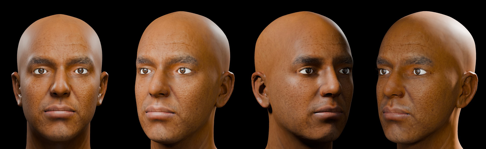
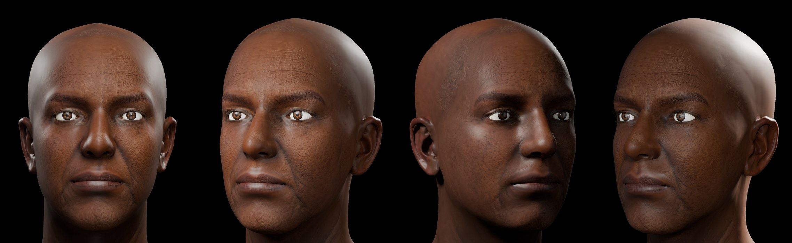
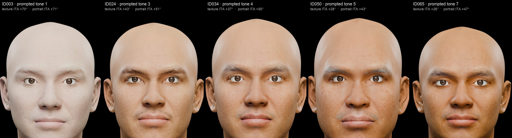
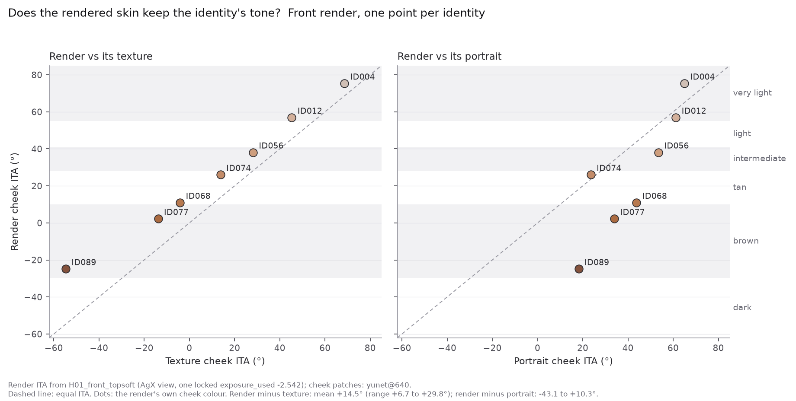

100 AI-generated studio portraits of people who do not exist: one for each combination of 10 prompted skin tones, 5 age bins and 2 gender presentations, with skin tone measured from every image (cheek ITA). Filter the set, or click a portrait for its labels.

The middle tones collapse. Measured cheek ITA falls as the prompted tone deepens, but the prompt phrases for tones 2 to 6, from "light skin" to "medium-tan skin", overlap almost completely (medians 55.35° to 51.40°). From tone 7 to 10 the medians fall steadily, from 44.40° to 4.95°.
Equal prompts, unequal coverage. By measured class the set skews light: 26 very light, 45 light, 10 intermediate, 13 tan, 5 brown and 1 dark. Ten portraits per prompted tone does not give ten per measured tone.
Next experiment: steer the middle tones with something more concrete than a phrase, such as a colour reference.
ITA = atan((L* − 50) / b*) in degrees, from two landmark-placed cheek patches per face; higher is lighter. Measured on studio-lit JPEGs, not a colour-calibrated capture.
Each identity's text description, not its portrait, becomes a UV skin texture: an image model recolours a template texture, and automatic gates check it at 2048, 4096 and 8192 px. 31 of the 100 pass every gate (prompted tones 1 to 9). Twelve of them are rendered here, in two batches, in Blender Cycles, with subsurface scattering from 4K material maps, on one generic FLAME 2023 Open head, so a render shows the identity's skin, not a 3D likeness of the portrait.








The texture follows the prompt. On the 31 gated textures, Spearman ρ between prompted tone and cheek ITA is −0.96 for the texture and −0.83 for the portrait. Unlit texture against lit photograph: compare the orderings, not the levels.
The render keeps the order but reads lighter. The seven renders keep their textures' order exactly (ρ 1.0) but measure lighter than the texture: +5° to +8° for the four lightest, +11.8°, +15.1° and +26.9° for ID068, ID077 and ID089. The five batch 2 skins (tones 1, 3, 4, 5 and 7, not in this chart) also keep their order and read +4.8° to +6.1° lighter than their textures.
Render ITA from each front render, with the same YuNet cheek patches as the portraits. The texture and head pipeline is not part of this repository.